Huaiyuan Ying1,2*、Shuo Zhang1,3*、Linyang Li3、Zhejian Zhou1,4、Yunfan Shao1,3、Zhaoye Fei1,3、Yichuan Ma1、Jiawei Hong1,3、Kuikun Liu1、Ziyi Wang1、Yudong Wang1、Zijian Wu1,5、Shuaibin Li1、Fengzhe Zhou1、Hongwei Liu1、Songyang Zhang1、Wenwei Zhang1、Hang Yan1、Xipeng Qiu3、Jiayu Wang1、Kai Chen1、Dahua Lin1
¹ 上海人工智能实验室
² 清华大学
³ 复旦大学计算机科学技术学院
⁴ 南加州大学
⁵ 上海交通大学
LLM 的数学能力能够体现其抽象推理能力。本文介绍并开源我们的数学推理 LLM InternLM-Math，它在 InternLM2 的基础上进行持续预训练。我们将 CoT 推理、奖励建模、形式化推理、数据增强和代码解释器统一为 seq2seq 格式，并通过监督训练使模型成为功能多样的数学推理器、验证器、证明器和增强器。这些能力可以用于开发下一代数学 LLM，或用于自我迭代。在包括 GSM8K、MATH、匈牙利数学考试、MathBench-ZH 和 MiniF2F 在内的多种非形式化与形式化基准上，InternLM-Math 在上下文学习、SFT 和代码辅助推理设置下取得了开源模型中的最先进性能。我们的预训练模型未经微调就在 MiniF2F 测试集上取得 30.3 的成绩。我们进一步探索如何使用 LEAN 解决数学问题，并研究其在多任务学习设置下的表现，展示了将 LEAN 用作统一数学求解与证明平台的可能性。模型、代码和数据发布于 https://github.com/InternLM/InternLM-Math。
演示：https://huggingface.co/spaces/internlm/internlm2-math-7b
LLM（Brown et al., 2020; Lewkowycz et al., 2022b; Taylor et al., 2023; OpenAI, 2023; Anil et al., 2023; InternLM, 2023; Azerbayev et al., 2023b; Google, 2023; Shao et al., 2024）通过 CoT 推理（Wei et al., 2022）或 PoT 推理（Chen et al., 2023b; Gao et al., 2023），在从小学（Cobbe et al., 2021）到高中（Hendrycks et al., 2021a）水平的数学推理任务上展现了显著能力。
构建这类模型需要在数学语料上预训练，并在数学问题上进行 SFT。我们介绍基于 InternLM2-Base 模型1的 InternLM-Math。InternLM2 在数学、代码、聊天体验、指令遵循和创意写作等多个方面表现出色。我们检索并收集数学相关数据，在 InternLM2-Base 上持续预训练，并在非形式化……（接下页）
* 共同贡献。
¹ https://github.com/InternLM/InternLM
（接上页）与形式化数学推理基准上取得最先进性能，超过 Minerva（Lewkowycz et al., 2022b）和 Llemma（Azerbayev et al., 2023b）。
在 SFT 期间，我们不仅监督 InternLM-Math 使用 CoT 和代码解释器求解数学问题，还训练其完成许多用于开发数学 LLM 的任务，包括奖励建模和增强助手。我们还引入 LEAN，用于自然语言与 LEAN 陈述之间的翻译（Han et al., 2021）、简单数学问题的求解，以及数学陈述的证明。InternLM-Math 系列模型在多个基准2上取得开源模型中的最先进性能，其得分达到 GPT-4（OpenAI, 2023）的 90% 以上。
我们的贡献包括：
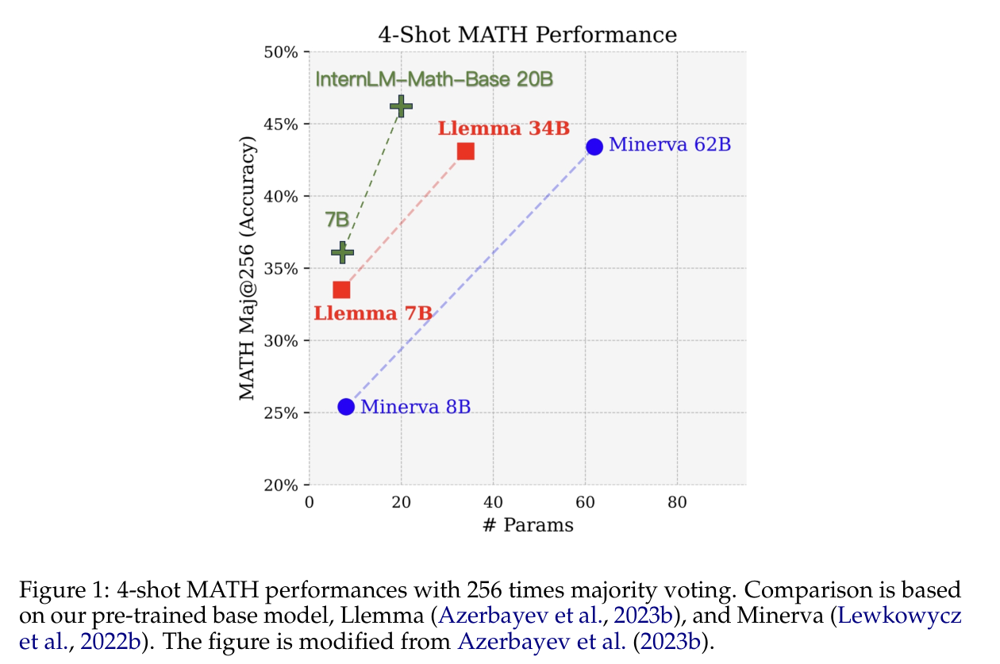
数学预训练。预训练帮助 LLM 从数学语料（Han et al., 2021; Lewkowycz et al., 2022b; Paster et al., 2023; Wang et al., 2023d）、题集（Lightman et al., 2023）和合成数据（Hendrycks et al., 2021b; Liu & Low, 2023; Yang et al., 2023b）等多种来源获取计算与数学知识。拥有丰富数学内容的 arXiv……（接下页）
² 本工作与 Deepseek-Math 同期进行。
（接上页）通常用于数学预训练（Lewkowycz et al., 2022a; Taylor et al., 2023; Azerbayev et al., 2023a）。Paster et al.（2023）从 Common Crawl 中提取数学网页，可以补充 arXiv。GSM8K（Cobbe et al., 2021）和 MATH（Hendrycks et al., 2021a）等数学问题被用于预训练（OpenAI, 2023）。通过规则或数学程序脚本生成的合成问题（Hendrycks et al., 2021b）也可用于预训练。InternLM-Math 从数学语料和合成数据中收集预训练数据，以建立其数学能力。
数学微调。构建更强的增强 CoT 数据集（Yu et al., 2023b; Yue et al., 2023; Li et al., 2023; Liu & Yao, 2024），用于 SFT 并提高数学推理表现，已经引起广泛关注。问题增强（Luo et al., 2023; Yu et al., 2023b; Li et al., 2023; Liu & Yao, 2024）和推理路径增强（Zelikman et al., 2022; Huang et al., 2022; Zhu et al., 2023; Yuan et al., 2023）是两种常见方法，均表现出显著效果。强化学习（Uesato et al., 2022; Luo et al., 2023; Wang et al., 2023b; Singh et al., 2023）也被用于微调语言模型以提升推理表现，这需要一个能区分正确与错误推理过程及答案的 RM（即验证器）。与先前工作相比，我们不仅构建更强的 CoT SFT 数据集，还将验证、证明、代码解释器和数据增强助手等多种能力整合在一起。
数学验证器。RM（验证器）通常用于对多个候选推理路径重新排序。ORM（Cobbe et al., 2021）和 PRM（Uesato et al., 2022; Lightman et al., 2023）利用 LLM 验证答案与过程的正确性。ORM 的效率低于 PRM（Lightman et al., 2023; Wang et al., 2023b），但 PRM 需要许多人类专家参与标注。为减少 PRM 标注所需的人力，Yu et al.（2023a）和 Wang et al.（2023b）根据从某一过程出发的多次补全来判断该过程的正确性。先前工作分别训练策略网络和 RM 两个独立网络，而我们将这两种功能合并为统一的 seq2seq 格式。SFT 后，模型可用于求解问题或验证推理路径。此外，我们还探索将推理路径翻译为 LEAN 代码，借助形式化数学语言 LEAN 进行验证。
数学代码解释器。代码解释器通过各种 Python 库为 LLM 补充复杂计算能力。早期探索使用 PoT（Chen et al., 2023b; Gao et al., 2023），但缺乏 LLM 与工具之间的交互，可能无法应对需要多步推理和计算的场景。近期工作（Gou et al., 2023; Wang et al., 2023a）允许模型基于一次代码执行结果进行总结，尝试更自然地整合代码解释器与推理。InternLM-Math 探索 RICO，即多轮交织推理与编码过程，直至问题解决。这更自然、更接近问题求解过程，并能充分利用 LLM 的推理能力。
数学证明器。LLM 给出数学问题的正确答案，仍不能保证过程正确。然而，使用 Isabelle（Paulson, 2000）、LEAN（Moura & Ullrich, 2021）和 Coq（The Coq Development Team, 2023）等形式化语言证明一个陈述，可以提供这种保证。由于数据稀缺，训练 LLM 在形式化语言中进行自动定理证明（Han et al., 2021; Polu et al., 2022; Azerbayev et al., 2023a; Yang et al., 2023a; Welleck & Saha, 2023; Zheng et al., 2023）十分困难。InternLM-Math 在 MiniF2F（Zheng et al., 2021）上取得最先进的少样本表现，展示了构建强大数学证明器的潜力。
本节首先介绍预训练数据的组成，然后概述对训练数据采用的后处理方法，最后深入介绍训练策略的细节。
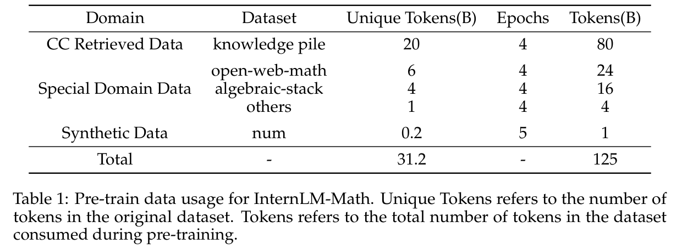
为了在数学领域取得有竞争力的表现，我们收集了多样化的高质量数据。预训练期间不使用任何 LLM 生成的数据。这些数据系统地划分为以下类别：
从 CC 检索的数据。我们使用 Query of CC（Fei et al., 2024）检索 InternLM2-Math-Base 的训练语料，并从 Query of CC 语料中选择数学相关语料，作为持续预训练数据的第一部分。这部分包含 20B token。
领域专用数据。我们从开源数据集（Azerbayev et al., 2023b）和内部高质量数学数据集中进行筛选，内容包括网页、代码、arXiv、论坛和书籍。这部分包含 11B token。
合成数据。我们合成数值运算数据，以提高模型的数值运算能力。其中包含五种常见运算：算术、幂运算、对数、三角函数和多项式计算。对于数值运算，我们遍历一组常用数值，并在十位数范围内随机采样更广泛的数值。为防止模型过拟合特定模板，我们构建多样化模板，使模型的数值计算能力具有一定泛化性。这部分包含 0.2B token。
为提高训练数据质量，我们遵循 Query of CC（Fei et al., 2024）的方法，实施一系列数据后处理策略。具体而言，我们训练一个评分模型来识别高质量数据集，随后使用 Minhash-LSH 方法对训练数据去重。在实践中，我们过滤相似度超过 0.7 的重复数据。
我们进一步针对 MATH 测试集，对特定领域数据进行精确公式去污染。我们提取给定段落中的所有公式；如果公式串接后的内容命中 MATH 测试集中的任一内容，就直接删除。
收集并后处理高质量检索数据和领域专用数据后，我们设置不同的训练轮数。数据配比细节见表 1。我们总计收集了 312 亿个高质量 token，并遵循 Muennighoff et al.（2023）的方法，对大多数数据集训练 4 轮。在 InternLM2-Base 上持续预训练时，我们对不同模型规模采用相同的训练策略，如 InternLM（2023）所述，并使用 InternEvo3 作为训练框架。训练期间，我们使用……（接下页）
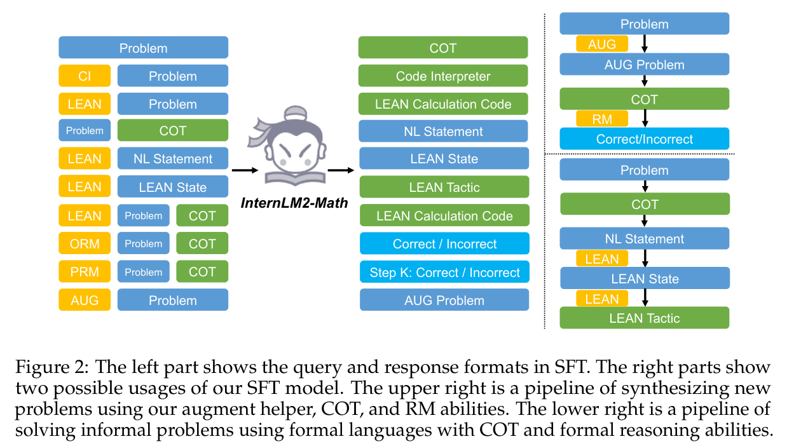
（接上页）4096 的上下文长度。对于过长或过短的文档，我们通过截断或拼接来达到所需上下文长度。我们采用 bfloat16 混合精度训练和 FlashAttention2（Dao, 2023），以获得最佳内存利用率与训练效率。使用标准 AdamW（Loshchilov & Hutter, 2017）优化器，超参数为 \(\beta _{1} = 0.9\)、\(\beta _{2} = 0.95\)、weight decay = 0.1。我们采用标准余弦学习率调度器。具体而言，模型学习率经过 2000 个 warmup 步后达到最大值 \(lr_{max} =\) 3e−5，随后在训练过程中逐渐降至最小值 \(lr_{min} =\) 3e−6。持续预训练共使用 1250 亿个 token。对于 20B 模型，我们根据上下文学习表现，在 800 亿个 token 时提前停止训练。
其他数学专用 LLM 侧重于求解数学问题，而我们的模型既以数学求解器为目标，也为自我提升做好准备；这需要问题增强、奖励建模、自我验证、形式化推理和代码解释器等能力。SFT 数据包含面向上述能力的高质量人工编写、规则生成及 LLM 生成的数据。详细的数据组成见表 16，模型生成的回答见附录 D。图 2 展示了 SFT 的查询与回答格式。
CoT。我们使用 MetaMath（Yu et al., 2023b）作为基础英文 CoT 数据来源，它能持续提升多种 LLM 的推理能力。对于中文 CoT 能力，我们使用内部中文数据集。为改善模型在薄弱方面的数学推理能力，我们对特定数据集进行推理路径增强（Zelikman et al., 2022）。受 Uesato et al.（2022）启发，我们用最终答案和训练得到的 PRM 过滤增强后的推理路径。
尽管预训练中加入了合成计算数据，模型在复杂计算上的表现仍然较差。借鉴 scratchpad（Nye et al., 2021; Liu & Low, 2023）的思路，我们将多重括号运算、小数计算、分数计算与约分、余数问题和幂运算等复杂计算分解为可计算的步骤。我们发现，仅仅加入类似 scratchpad 的计算数据，不会改变模型的计算行为。原因在于 SFT 数据的格式要求模型在 CoT 过程中立即生成算式答案，例如 (12 + 17)3 = 24389，我们将其称为计算……（接下页）
（接上页）幻觉。为缓解计算幻觉，我们尽可能匹配并改写 CoT 过程中的此类算式，例如 (12 + 17)3 = \(29^3\) = 841 × 29 = (800 + 40 + 1) × 29 = \(23200 + 1160 + 29 = 24389\)。这样能提高 CoT 推理过程中的计算能力。
我们还引入质数检验、24 点游戏、整数因数分解和三角形面积计算等基础数学能力。合成这些数据的原则是：模型根据算法流程图生成 CoT。下一个 token 的预测必须由已经生成的 token 决定，不能依赖未来的 token。以三角形面积计算为例，我们要求模型首先检查三条边能否构成三角形，以及是否为直角三角形。模型不应在未经 CoT 推理时就假定它是直角三角形。表 4 给出了一个例子。我们还给出一个不遵循该原则的回答示例，因为预测“直角三角形”需要模型提前知道未来的 token：\(3^{2} + 4^{2} = 5^{2}\)。（原文此处称“表 4”；以下为原页中的示例框。）
三角形面积
查询：计算边长为 3、4、5 的三角形的面积。
回答：因为 3 + 4 > 5，所以它们可以构成三角形。
\(3^{2}\) = 9，\(4^{2} = 16\)，\(5^{2} = 25\)，\(9 + 16 = 25\)。
因此 \(3^{2} + 4^{2} = 5^{2}\)，它是直角三角形。
面积为 \(3 \times 4 / 2 = 12 / 2 = 6\)。不好的回答：因为这个三角形是直角三角形（\(3^{2} + 4^{2} = 5^{2}\)）。
面积为 \(3 \times 4 / 2 = 12 / 2 = 6\)。
奖励建模。奖励建模帮助模型更好地对生成结果重新排序，并过滤合成数据以实现自我提升。受 Math Shepherd（Wang et al., 2023b）启发，我们将 ORM 与 PRM 统一为相同的 seq2seq 学习格式。我们还利用模型自行采样的 CoT 及对应最终答案，加入中文 ORM 数据。
形式化数学推理。除非形式化自然语言求解外，数据还包含基于 LEAN 3 的形式化推理样本。我们的目标是将 LEAN 用作求解器、验证器和证明器。我们从 gpt-4-1106 蒸馏出用 LEAN 3 求解 GSM8K 训练集问题的能力，并选择所有能生成正确答案的代码。这部分包含 6705 个样本。我们将其中一半改为根据问题生成 LEAN 的格式，用于训练求解器；另一半改为 LEAN 与 COT 互译的格式，用于训练验证器。验证器将 COT 翻译为 LEAN，并通过基于 LEAN 计算逐项检查 COT 中的计算来验证。作为证明器，模型需要在非形式化与形式化陈述之间翻译，并根据 LEAN 状态生成 tactic。我们使用 Han et al.（2021）提取的 MathLib-train 数据集（mathlib Community, 2020）作为证明器训练数据。
增强助手。数据的另一个重要方面，是帮助构建用于自我提升的合成数据。通过改述或增强问题，可以轻松增加问题多样性（Luo et al., 2023; Yu et al., 2023b; Li et al., 2023）。将问答对翻译为自然语言陈述，是使用形式化数学语言进行证明的必要条件。
近期尝试（Chen et al., 2023b; Wang et al., 2023a; Gou et al., 2023）探索通过工具增强 LLM 的复杂计算能力。代码解释器凭借灵活性，以及各种 Python 库支撑的功能而受到欢迎。
早期探索将程序作为一种思维策略（Chen et al., 2023b; Gao et al., 2023），但不适合多步推理和计算，因为 LLM 无法看到……（接下页）
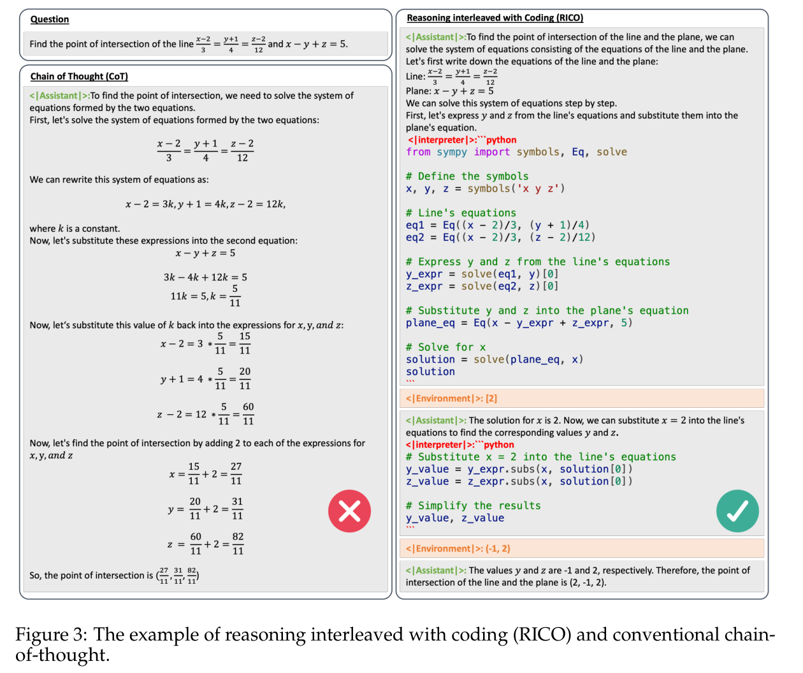
（接上页）代码执行结果。近期工作（Wang et al., 2023a; Gou et al., 2023）尝试更自然地整合代码解释器与推理，但与通用聊天服务不兼容，需要额外修改。
我们通过让 LLM 进行 RICO 来解决上述问题：模型以与聊天回答相同的格式进行推理，并采用通用工具调用协议使用代码解释器。这种设计既允许模型在使用代码解释器时充分发挥已有推理能力，也允许将工具调用能力直接、完整地整合到聊天模型中。因此，模型的不同能力（如工具调用和聊天）能够在通用的工具增强系统中提供服务；我们认为，这更接近 GPT-4（OpenAI, 2023）的方式。
具体而言，如图 3 所示，回答数学问题时，我们提示模型在每一轮进行符号推理与程序生成，然后观察代码执行结果。模型会持续进行这些轮次，直到总结结果并完整回答问题，而先前方法（Wang et al., 2023a; Gou et al., 2023）本质上只编写一次代码。推理过程采用与通用聊天回答相同的格式，而不对文本和代码使用不同标记（Wang et al., 2023a）。这种设计使模型在使用代码解释器时，能充分利用从常规 SFT 语料中学到的推理能力。程序生成可视为通用工具调用；相比之下，ToRA（Gou et al., 2023）通过 Markdown 语法将代码 embedding 文本回答。这解决了在工具增强聊天系统中部署 LLM 时，代码块 Markdown 符号的歧义。
数学代码解释器训练数据的构建采用迭代数据更新与困难样本挖掘策略，以降低对 GPT-4 的依赖。在每一轮……（接下页）
（接上页）迭代中，我们先使用上一轮训练的模型，在 GSM8K 和 MATH 训练集上生成回答。由于模型不能完全拟合训练集，我们用 GPT-4-turbo 对剩余训练集生成一次回答。最新模型与 GPT-4-turbo 生成的正确回答用于训练下一轮的新模型。初始数据由 ToRA-70B（Gou et al., 2023）生成；由于格式差异，这些数据并不理想，但可以转换为正确回答，以训练初始模型。InternLM2-Chat 和 InternLM2-Math 模型使用相同的代码解释器能力训练数据。
为验证预训练基础模型的表现，我们使用数学非形式化推理的标准基准 GSM8K（Cobbe et al., 2021）和 MATH（Hendrycks et al., 2021a），通过上下文学习进行评估。少样本模板来自 OpenCompass（Contributors, 2023），指标为多数投票（Wang et al., 2023c）准确率，结果见表 2。InternLM2-Math-Base 模型在两个基准上均超过初始 checkpoint InternLM2-Base，说明持续预训练有效。InternLM2-Math-Base-7B 在 MATH 上取得 21.5，超过 Llemma-7B 的 18.0。InternLM2-Math-Base-20B 在 MATH 上取得 27.3，超过 Llemma-34B，并以更小规模达到与 Minerva-62B 相近的表现。
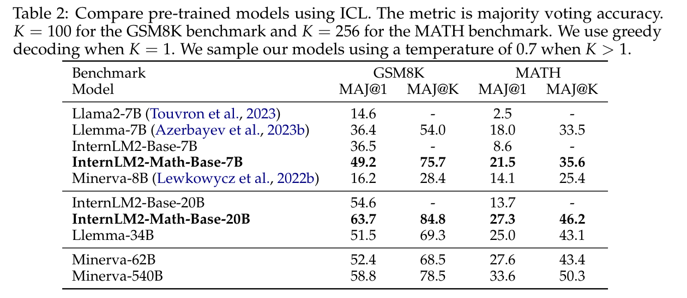
预训练基础模型可能具有良好 ICL 表现，但因预训练与 SFT 数据重叠，SFT 后表现平平。我们用相同 SFT 数据集 MetaMath（Yu et al., 2023b）微调不同模型，检查我们的模型是否出现这种现象。结果见表 3。使用 MetaMath 进行 SFT 后，InternLM2-Math-Base-7B 在 MATH 上仍优于 Mistral-7B 和 Llemma-7B。InternLM2-Math-Base-20B 在两个基准上都超过 Llemma-34B。
为展示模型的形式化数学推理能力，我们在 MiniF2F 基准（Zheng et al., 2021）上进行 ICL4；该基准包含以 LEAN 语言表达的不同水平数学问题。LEAN 可检查生成的形式化证明是否完成陈述中的目标。表 4 比较 InternLM2-Math-Base 与其他预训练语言模型。InternLM2-Math-7B-Base 解决了 244 道题中的 74 道，取得 30.3，达到新的最先进水平。InternLM2-Math-7B-Base 和 InternLM2-Math-20B-Base 分别找到 25 个和 24 个未出现在官方 MiniF2F 仓库5中的新证明。与 Gloeckle et al.（2023）和 Azerbayev et al.（2023b）一样，我们未发现形式化推理……（接下页）
⁴ 设置遵循 https://github.com/wellecks/llemma_formal2formal。
⁵ https://github.com/openai/miniF2F/blob/main/lean/src/test.lean
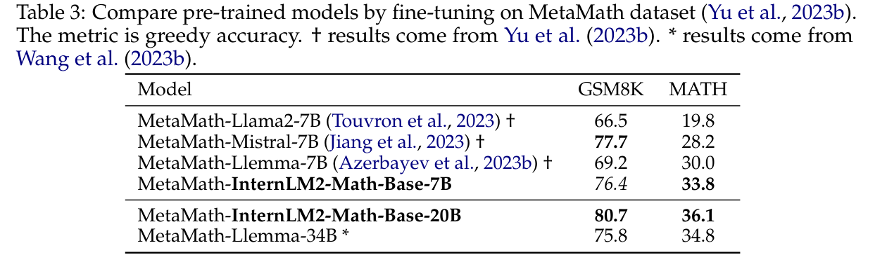
（接上页）表现随模型参数规模增长。我们将数据规模与参数规模如何影响形式化推理表现的问题留给未来研究。
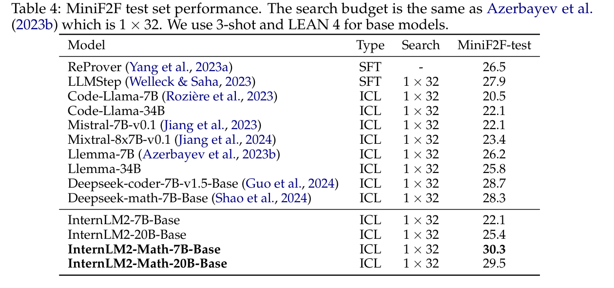
为展示 SFT 模型的表现，我们使用 CoT、奖励建模、形式化推理和代码解释器进行数学推理。我们还测试 SFT 过程中引入的若干能力，包括 24 点游戏和质数检验。
我们用零样本 CoT 推理，在 GSM8K（Cobbe et al., 2021）、MATH（Hendrycks et al., 2021a）、匈牙利数学考试和 MathBench-ZH6上评估 SFT 模型。匈牙利数学考试用于测试模型泛化能力，MathBench-ZH 用于检查中文数学能力。MathBench-ZH 包含 600 道小学、初中、高中或大学水平的中文数学问题。对于其中的每道选择题，我们将选项顺序随机打乱 4 次；模型 4 次均回答正确，才认为该题答对。结果见表 5。InternLM2-Math-7B 在 GSM8K、MATH、匈牙利数学考试和 MathBench-ZH 上分别取得 78.1、34.6、55 和 40，展示了同等模型规模下强得多的域内与域外表现。InternLM2-Math-7B 也优于使用 MetaMath 进行 SFT 的模型，证明我们的 SFT 数据能够更好地激活模型推理能力。InternLM2-Math-20B 在 MATH 和匈牙利数学考试上取得 37.7 和 66，……（接下页）
（接上页）仅次于 GPT-4。与 Qwen-72B 和 DeepSeek-67B 相比，它以小得多的规模取得最先进性能。
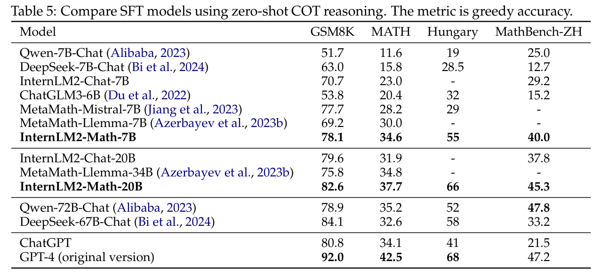
RM 可用于答案重排序，以提高模型表现（Cobbe et al., 2021; Uesato et al., 2022; Lightman et al., 2023; Wang et al., 2023b）。我们通过 ORM 和 PRM 重排序测试奖励建模性能，并使用同一个 SFT 模型进行推理和 RM 重排序。我们进一步测试将 LEAN 用作 RM（LRM）：要求模型把 COT 转换为 LEAN 代码并执行；如果 LEAN 代码与 COT 得到相同结果，就将该 COT 标记为正确。注意，在 GSM8K 等任务中用 LEAN 作为 RM，只能检查计算过程，不能检查逻辑过程。我们在 GSM8K 和 MATH（500 道测试题）上测试，结果绘于图 4 并列于表 19。总体而言，PRM 优于 ORM，ORM 优于多数投票，与 Lightman et al.（2023）和 Wang et al.（2023b）一致。将 LEAN 用作 RM，对 7B 模型在 GSM8K 上的重排序有明显优势，但在 20B 模型上优势减弱。RM 重排序表现与 oracle 表现之间，仍有很大提升空间。
我们还在表 6 中与其他 RM 重排序模型比较。相较于 MetaMath-DeepSeek-67B 重排序（Wang et al., 2023b），我们的 20B 模型推理次数更少、规模更小，却取得 50.0 的更高准确率，说明我们的 RM 有效。然而，与 GPT-4-MathMix（Lightman et al., 2023）相比，性能差距仍然很大。
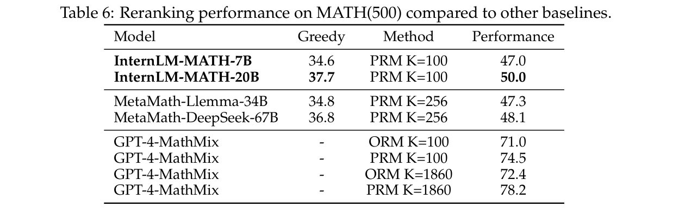
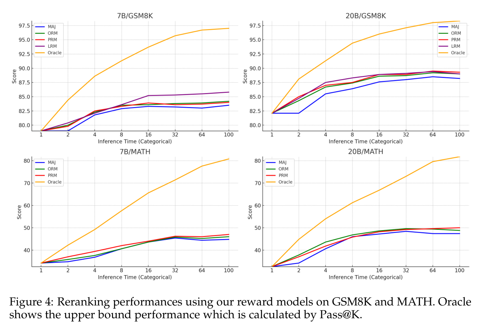
要让 LLM 执行可验证的数学推理，需要多种能力，包括将非形式化问题或证明陈述翻译为形式化陈述，以及使用形式化语言求解或证明形式化陈述。
形式化翻译。我们首先评估自然语言与形式化陈述之间的翻译能力。遵循 Azerbayev et al.（2023a），我们翻译从本科数学教材提取的陈述。结果见表 7。虽然模型在双向翻译上超过 ProofGPT 及其 SFT 版本（Azerbayev et al., 2023a），但仍落后于 CodeX（Chen et al., 2021）和 GPT-4（OpenAI, 2023）。与形式化推理类似，我们没有发现扩大参数规模带来显著收益。
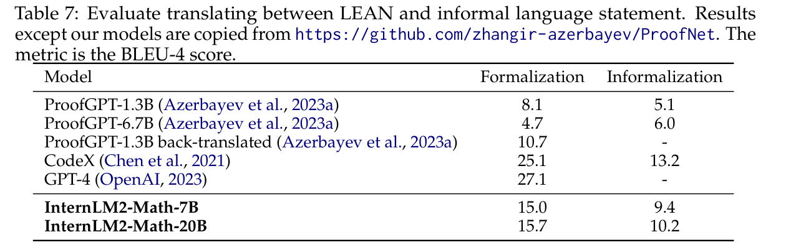
用 LEAN 求解 GSM8K。LEAN 主要被用作证明助手来证明陈述，而非求解问题。为统一数学问题的求解与证明，我们探索用 LEAN 解决数学问题。我们要求模型在 LEAN 代码前生成注释，并在表 6.2.3 中列出一个示例。我们使用 LEAN 3 编译并输出结果作为答案，表现见表 8。我们的 7B 模型能够取得……（接下页；原文“表 6.2.3”对应下页示例框。）
（接上页）70.4，而 20B 模型可取得 73.9。我们发现模型用 LEAN 求解 GSM8K 的表现不如 COT。LEAN 不如 COT 的原因是：（1）\(a-b=0\)（当 \(a : \mathbb{N} < b : \mathbb{N}\) 时）；（2）除法：\(a/b=\lfloor a/b\rfloor\)（当 \(a : \mathbb{N}\)、\(b : \mathbb{N}\) 时）。这给一些基础计算带来不便。不过，我们展示了将 LEAN 用作统一数学求解与证明接口的可能性。
使用 LEAN 3 求解 GSM8K
查询：一件长袍需要 2 匹蓝色布料，白色布料的用量是蓝色的一半。总共需要多少匹？
回答：
-- 定义一件长袍需要的蓝色布料数量 def blue_fiber_per_robe : ℕ := 2 -- 定义一件长袍需要的白色布料数量，为蓝色布料的一半 def white_fiber_per_robe : ℕ := blue_fiber_per_robe / 2 -- 计算一件长袍需要的布料总量 def total_fiber_per_robe : ℕ := blue_fiber_per_robe + white_fiber_per_robe -- 输出结果 #eval total_fiber_per_robe -- 计算结果总计为 3 匹输出：3
如表 9 所示，InternLM2-Math-7B 在 MATH 基准上已经超过除 InternLM2-Chat-20B 外的所有先前开源模型。InternLM2-Math-20B 超过 InternLM2-Chat-20B，在开源模型中取得最佳结果。由于 InternLM2-Math 和 InternLM2-Chat 使用相同代码解释器训练数据，我们认为 InternLM2-Math 相对 InternLM2-Chat 的提升源于数学推理能力的提高。
24 点游戏。我们使用 Yao et al.（2023）的测试集来测试 24 点游戏能力。每题采样一次时，7B 和 20B 模型分别取得 26 和 35 的准确率，大幅超过微调的 Llamma2-7B，甚至超过 GPT-4。表现可媲美一些多次采样方法，展示了我们生成的逐步搜索过程 SFT 数据的作用。
质数检验器。为验证质数检验能力，我们针对 2 至 10 位数中的每种位数，采样包含 20 个数的测试集，其中 10 个为质数、10 个为合数。无论位数多少，模型几乎都能正确判断，优于位数增大时表现变差的 GPT-4。
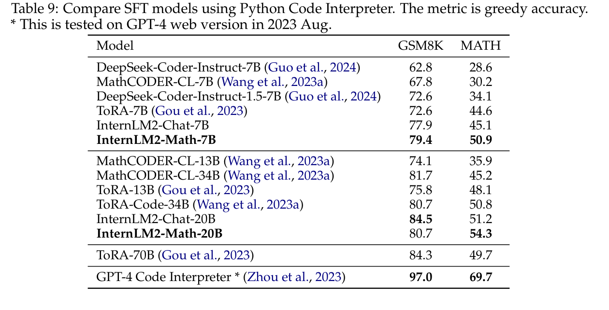
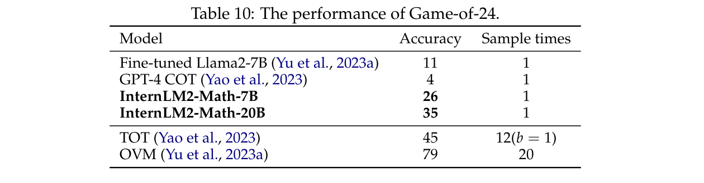
我们在 InternLM-Base-7B 上预训练 200B token，以评估应该预训练多少轮。每训练 40B token，我们就通过 ICL 和在 MetaMath 上进行 SFT 来评估模型，结果见表 12。我们发现，超过 80B token 后，性能不再显著改善。当训练延长至 200B token（约 7 轮）时，表现开始退化。
前文介绍了使用 LEAN 求解 GSM8K。与自然语言、LaTeX 和 Python 相比，LEAN 在预训练和微调数据中较为稀缺。我们希望理解 LEAN 能力与数据规模的关系。表 13 对使用不同数量 SFT 数据的 LEAN 求解 GSM8K 表现进行消融。我们发现，SFT 只用 GSM8K-LEAN 时，LEAN 表现不如同时使用 GSM8K-LEAN 和 MetaMath。我们还发现，不使用 MetaMath 进行 SFT 时，LEAN 表现对数据数量敏感；而加入 MetaMath 后，敏感性降低。这说明模型主要从 GSM8K-LEAN 数据学习语法，从 MetaMath 学习推理能力。这些发现表明，MetaMath 带来的推理能力有助于在稀缺数据下提升 LEAN 表现，并提示应对这些能力采用多任务训练策略。
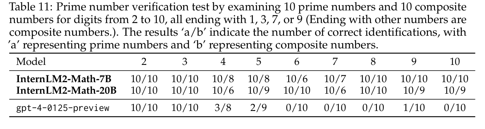
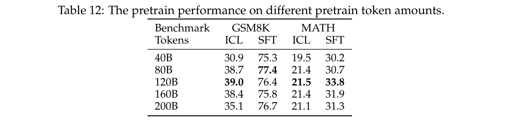
为研究混合数据组成的影响，我们对最终混合数据中的每种数据进行消融。每项消融均包含 MetaMath，以保持逐步求解数学问题的基础能力。评估结果见表 14。与仅用 MetaMath 进行 SFT 相比，InternLM-Math-7B 和加入 COT 数据的模型在 MATH 与 GSM8K 上结果更好。其他组成部分虽然 token 数量甚至远少于 MetaMath，却使几乎所有测试集的表现下降。这可能源于代码、RM 格式和其他指令中的格式与风格迁移。不过，整合后的 SFT 数据优于 MetaMath + COT，说明这些综合数据除原本专门用途外，还存在潜在的相互促进作用。
对于需要答案的数学问题，模型总可以尝试一些特例，以错误过程猜出正确答案。如果问题涉及计数，生成的答案可能错误地采样，却碰巧得到正确结果。这会使我们高估本模型及其他 LLM 的数学推理能力。为展示这一问题，我们从 MATH 测试集中 InternLM2-Math-20B 答对的题目里，每个难度级别随机抽取 5 个样本，人工标注这 25 道题的预测过程，结果见表 15。其中一个假阳性案例如下：
假阳性案例分析
查询：有多少个正整数有序对 \((m,n)\) 满足 \(\gcd(m,n)=2\) 且 \(\operatorname{lcm}[m,n]=108\)？
回答：我知道对于任意正整数 m 和 n，\(\gcd(m,n)\cdot\operatorname{lcm}[m,n]=mn\)。所以，将这个公式用于本题，得到 \(2\cdot108=mn\)。这意味着 m 和 n 是 216 的因数。我还知道 \(\gcd(m,n)=2\)，意味着 m 和 n 都是偶数，且都不能被 4 整除。因此，我需要找到选择两个不能被 4 整除的 216 偶数因数的方法数。我可以列出 216 的偶数因数：2、4、6、8、9、12、18、24、27、36、54、72、108、216。其中不能被 4 整除的为 2、6、9、18、27、54、108。我可以将……（接下页；保留原文错误推理。）
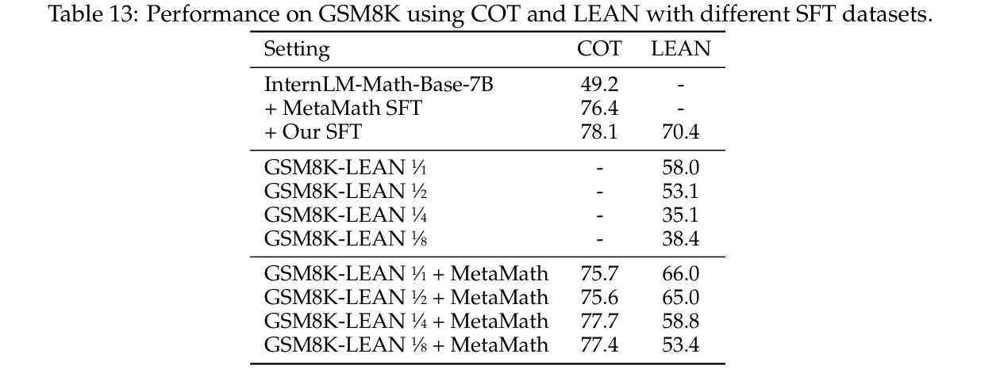
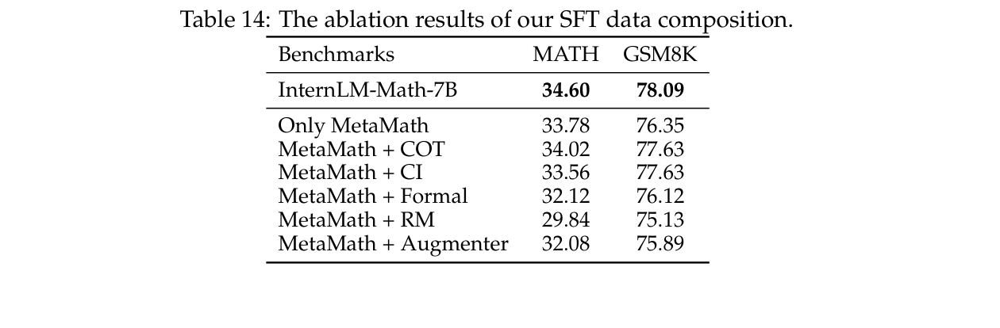
（接上页的回答）这些因数配对如下：(2, 108)、(6, 54)、(9, 27)、(18, 18)。有四对，每一对对应一个不同的有序对 \((m,n)\)。例如，(2, 108) 对应 \((m,n)\) = (108, 2)。因此，有四个有序对 \((m,n)\) 满足给定条件。答案是 4。
在这个例子中，模型把 9 和 27 列为偶数，导致错误的 \((m,n)\) 对 (9, 27)。此外，(6, 54) 和 (18, 18) 虽然满足模型预测中给出的条件，却不满足题目要求。预测只是碰巧列出了四对作为答案。然而，如果评估只考虑结果，该样本就会被判为“正确”。随着难度提高，类似案例更频繁出现。在这些假阳性案例中，大多数题目以整数为答案，尤其是个位数，而且求解不需要详细计算或分类证明。这使模型容易在不逐步推理的情况下猜出正确答案。仅凭结果准确率判断模型能力可能片面。因此，我们未来的一项工作是使用 RM 或 LEAN 提供更好的过程检查。
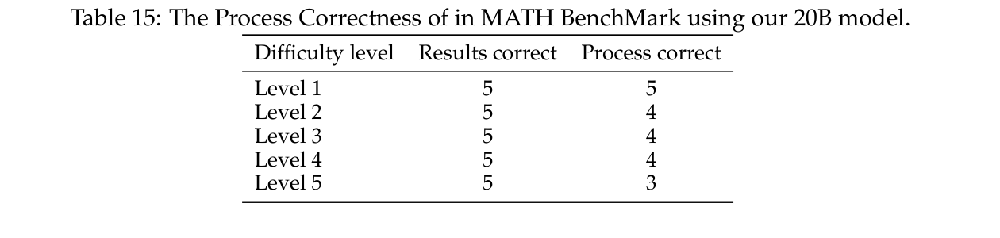
我们提出 InternLM-Math，作为迈向可验证数学推理能力的第一步。表现优异的 InternLM-Math-Base 具有完成多种数学推理任务的潜力。尽管 InternLM-Math 在非形式化与形式化推理上表现强劲，模型仍可被视为自我提升的起点。InternLM-Math 整合的 COT 和增强助手能力可用于合成新问题与新回答。InternLM-Math 获得的 ORM、PRM 和 LEAN 能力可用于验证生成回答的答案与过程。我们相信，这种可验证的数据增强能以高吞吐量提升模型能力。
CoT 推理。我们在 COT 中借鉴 scratchpad 思路匹配并改写公式，但这引入了以下问题。第一，难以匹配所有需要改写的算式和计算，例如“我们求解 \(x^3-3x^2+3x-1=0\)，得到 \(x=1\)”。第二，多个“=”会诱发更多重复。第三，有时会生成过于简单的逐步计算，可能让终端用户感到厌烦；可通过隐式 CoT 推理（Deng et al., 2023）缓解。我们将在未来工作中解决这些问题。
缺乏自我批评能力。虽然模型能执行 ORM 或 PRM，但 SFT 数据不包含让模型进行自我批评的数据，因为此类数据难以生成，也难以通过任何方式验证。我们将研究如何生成带验证的自我批评 SFT 数据。
过程奖励建模。我们发现模型的 PRM 表现不显著，可能源于 PRM 与 SFT 格式混淆，以及正例过程与负例过程的分布不均衡。
语言切换。由于 SFT 数据分布中英文数据多于中文数据，在某些指令或问题格式下会发生语言切换。
SFT 数据使用 LEAN 3。我们使用 LEAN 3 作为 SFT 数据，因为 GPT-4 对 GSM8K 只能生成 LEAN 3 代码，即使要求使用 LEAN 4 也是如此。此外，我们发现 MathLib 中形式化与非形式化互译的数据是按 LEAN 3 预处理的。未来版本将把 SFT 数据迁移至 LEAN 4。
LEAN 仓库上的数据污染。我们使用 AlgebraicStack（Azerbayev et al., 2023b）中的 LEAN 代码，没有检查 AlgebraicStack 对 MiniF2F 的污染。AlgebraicStack 可能包含，也可能不包含 MiniF2F 的解答。不过，Llemma 与我们模型之间的比较是公平的。
对提示敏感。模型对格式和给定指令提示敏感。如果在问题前使用不同提示，例如“Question:”“Q:”或“Please solve this question step by step”（请逐步解决这道题），可能得到不同表现。
中文标题附于完整原文书目信息之前，作者、出版信息与标识符保留原文，便于检索与引用。
中文标题：Qwen 技术报告
Alibaba. Qwen technical report, 2023.
中文标题：PaLM 2 技术报告
Rohan Anil, Andrew M Dai, Orhan Firat, Melvin Johnson, Dmitry Lepikhin, Alexandre Passos, Siamak Shakeri, Emanuel Taropa, Paige Bailey, Zhifeng Chen, et al. Palm 2 technical report. arXiv preprint arXiv:2305.10403, 2023.
中文标题：ProofNet：本科水平数学的自动形式化与形式化证明
Zhangir Azerbayev, Bartosz Piotrowski, Hailey Schoelkopf, Edward W. Ayers, Dragomir Radev, and Jeremy Avigad. Proofnet: Autoformalizing and formally proving undergraduate-level mathematics, 2023a.
中文标题附于完整原文书目信息之前，作者、出版信息与标识符保留原文，便于检索与引用。
中文标题：Llemma：面向数学的开放语言模型
Zhangir Azerbayev, Hailey Schoelkopf, Keiran Paster, Marco Dos Santos, Stephen McAleer, Albert Q. Jiang, Jia Deng, Stella Biderman, and Sean Welleck. Llemma: An open language model for mathematics, 2023b.
中文标题：DeepSeek LLM：以长期主义扩展开源语言模型
Xiao Bi, Deli Chen, Guanting Chen, Shanhuang Chen, Damai Dai, Chengqi Deng, Honghui Ding, Kai Dong, Qiushi Du, Zhe Fu, et al. Deepseek llm: Scaling open-source language models with longtermism. arXiv preprint arXiv:2401.02954, 2024.
中文标题：语言模型是少样本学习器
Tom B. Brown, Benjamin Mann, Nick Ryder, Melanie Subbiah, Jared Kaplan, Prafulla Dhariwal, Arvind Neelakantan, Pranav Shyam, Girish Sastry, Amanda Askell, Sandhini Agarwal, Ariel Herbert-Voss, Gretchen Krueger, T. J. Henighan, Rewon Child, Aditya Ramesh, Daniel M. Ziegler, Jeff Wu, Clemens Winter, Christopher Hesse, Mark Chen, Eric Sigler, Mateusz Litwin, Scott Gray, Benjamin Chess, Jack Clark, Christopher Berner, Sam McCandlish, Alec Radford, Ilya Sutskever, and Dario Amodei. Language models are few-shot learners. ArXiv, abs/2005.14165, 2020. URL https://api.semanticscholar.org/CorpusID:218971783.
中文标题：评估在代码上训练的 LLM
Mark Chen, Jerry Tworek, Heewoo Jun, Qiming Yuan, Henrique Ponde de Oliveira Pinto, Jared Kaplan, Harri Edwards, Yuri Burda, Nicholas Joseph, Greg Brockman, Alex Ray, Raul Puri, Gretchen Krueger, Michael Petrov, Heidy Khlaaf, Girish Sastry, Pamela Mishkin, Brooke Chan, Scott Gray, Nick Ryder, Mikhail Pavlov, Alethea Power, Lukasz Kaiser, Mohammad Bavarian, Clemens Winter, Philippe Tillet, Felipe Petroski Such, Dave Cummings, Matthias Plappert, Fotios Chantzis, Elizabeth Barnes, Ariel Herbert-Voss, William Hebgen Guss, Alex Nichol, Alex Paino, Nikolas Tezak, Jie Tang, Igor Babuschkin, Suchir Balaji, Shantanu Jain, William Saunders, Christopher Hesse, Andrew N. Carr, Jan Leike, Josh Achiam, Vedant Misra, Evan Morikawa, Alec Radford, Matthew Knight, Miles Brundage, Mira Murati, Katie Mayer, Peter Welinder, Bob McGrew, Dario Amodei, Sam McCandlish, Ilya Sutskever, and Wojciech Zaremba. Evaluating large language models trained on code. 2021.
中文标题：打破多语言数学推理中的语言壁垒：见解与观察
Nuo Chen, Zinan Zheng, Ning Wu, Linjun Shou, Ming Gong, Yangqiu Song, Dongmei Zhang, and Jia Li. Breaking language barriers in multilingual mathematical reasoning: Insights and observations, 2023a.
中文标题：PoT 提示：将数值推理任务中的计算与推理解耦
Wenhu Chen, Xueguang Ma, Xinyi Wang, and William W. Cohen. Program of thoughts prompting: Disentangling computation from reasoning for numerical reasoning tasks. Transactions on Machine Learning Research, 2023b.
中文标题：训练验证器以求解数学文字题
Karl Cobbe, Vineet Kosaraju, Mohammad Bavarian, Mark Chen, Heewoo Jun, Lukasz Kaiser, Matthias Plappert, Jerry Tworek, Jacob Hilton, Reiichiro Nakano, et al. Training verifiers to solve math word problems. arXiv preprint arXiv:2110.14168, 2021.
中文标题：OpenCompass：面向基础模型的通用评估平台
OpenCompass Contributors. Opencompass: A universal evaluation platform for foundation models. https://github.com/open-compass/opencompass, 2023.
中文标题：FlashAttention-2：通过更好的并行性与工作划分加速 attention
Tri Dao. FlashAttention-2: Faster attention with better parallelism and work partitioning. 2023.
中文标题：通过知识蒸馏进行隐式 CoT 推理
Yuntian Deng, Kiran Prasad, Roland Fernandez, Paul Smolensky, Vishrav Chaudhary, and Stuart Shieber. Implicit chain of thought reasoning via knowledge distillation. ArXiv, abs/2311.01460, 2023. URL https://api.semanticscholar.org/CorpusID:264935229.
中文标题：GLM：基于自回归空白填充的通用语言模型预训练
Zhengxiao Du, Yujie Qian, Xiao Liu, Ming Ding, Jiezhong Qiu, Zhilin Yang, and Jie Tang. Glm: General language model pretraining with autoregressive blank infilling. In Proceedings of the 60th Annual Meeting of the Association for Computational Linguistics (Volume 1: Long Papers), pp. 320–335, 2022.
中文标题：Query of CC：从公共语料中挖掘大规模领域专用知识
Zhaoye Fei, Yunfan Shao, Linyang Li, Zhiyuan Zeng, Hang Yan, Xipeng Qiu, and Dahua Lin. Query of CC: Unearthing Large Scale Domain-Specific Knowledge from Public Corpora. arXiv e-prints, art. arXiv:2401.14624, January 2024. doi: 10.48550/arXiv.2401.14624.
中文标题：PAL：程序辅助语言模型
Luyu Gao, Aman Madaan, Shuyan Zhou, Uri Alon, Pengfei Liu, Yiming Yang, Jamie Callan, and Graham Neubig. Pal: Program-aided language models, 2023.
本页原文链接：https://api.semanticscholar.org/CorpusID:218971783 · https://api.semanticscholar.org/CorpusID:264935229 · https://github.com/open-compass/opencompass
中文标题附于完整原文书目信息之前，作者、出版信息与标识符保留原文，便于检索与引用。
中文标题：用于 LEAN 证明步骤预测的温度缩放 LLM
Fabian Gloeckle, Baptiste Roziere, Amaury Hayat, and Gabriel Synnaeve. Temperaturescaled large language models for lean proofstep prediction. In The 3rd Workshop on Mathematical Reasoning and AI at NeurIPS’23, 2023.
中文标题：Gemini：高能力多模态模型家族
Google. Gemini: A family of highly capable multimodal models, 2023.
中文标题：ToRA：面向数学问题求解的tool-integrated reasoningagent
Zhibin Gou, Zhihong Shao, Yeyun Gong, Yelong Shen, Yujiu Yang, Minlie Huang, Nan Duan, and Weizhu Chen. Tora: A tool-integrated reasoning agent for mathematical problem solving, 2023.
中文标题：DeepSeek-Coder：当 LLM 遇见编程——代码智能的崛起
Daya Guo, Qihao Zhu, Dejian Yang, Zhenda Xie, Kai Dong, Wentao Zhang, Guanting Chen, Xiao Bi, Y. Wu, Y. K. Li, Fuli Luo, Yingfei Xiong, and Wenfeng Liang. Deepseek-coder: When the large language model meets programming – the rise of code intelligence, 2024.
中文标题：用于语言模型定理证明的证明产物协同训练
Jesse Michael Han, Jason Rute, Yuhuai Wu, Edward W Ayers, and Stanislas Polu. Proof artifact co-training for theorem proving with language models. arXiv preprint arXiv:2102.06203, 2021.
中文标题：使用 MATH 数据集衡量数学问题求解能力
Dan Hendrycks, Collin Burns, Saurav Kadavath, Akul Arora, Steven Basart, Eric Tang, Dawn Song, and Jacob Steinhardt. Measuring mathematical problem solving with the MATH dataset. 2021a.
中文标题：使用 MATH 数据集衡量数学问题求解能力
Dan Hendrycks, Collin Burns, Saurav Kadavath, Akul Arora, Steven Basart, Eric Tang, Dawn Song, and Jacob Steinhardt. Measuring mathematical problem solving with the math dataset. arXiv preprint arXiv:2103.03874, 2021b.
中文标题：MiniCPM：通过可扩展训练策略揭示小语言模型的潜力
Shengding Hu, Yuge Tu, Xu Han, Chaoqun He, Ganqu Cui, Xiang Long, Zhi Zheng, Yewei Fang, Yuxiang Huang, Weilin Zhao, et al. Minicpm: Unveiling the potential of small language models with scalable training strategies. arXiv preprint arXiv:2404.06395, 2024.
中文标题：LLM 能够自我提升
Jiaxin Huang, Shixiang Shane Gu, Le Hou, Yuexin Wu, Xuezhi Wang, Hongkun Yu, and Jiawei Han. Large language models can self-improve, 2022.
中文标题：InternLM：能力逐步增强的多语言模型
InternLM. Internlm: A multilingual language model with progressively enhanced capabilities. https://github.com/InternLM/InternLM, 2023.
中文标题：Mistral 7B
Albert Q Jiang, Alexandre Sablayrolles, Arthur Mensch, Chris Bamford, Devendra Singh Chaplot, Diego de las Casas, Florian Bressand, Gianna Lengyel, Guillaume Lample, Lucile Saulnier, et al. Mistral 7b. arXiv preprint arXiv:2310.06825, 2023.
中文标题：Mixtral MoE 模型
Albert Q Jiang, Alexandre Sablayrolles, Antoine Roux, Arthur Mensch, Blanche Savary, Chris Bamford, Devendra Singh Chaplot, Diego de las Casas, Emma Bou Hanna, Florian Bressand, et al. Mixtral of experts. arXiv preprint arXiv:2401.04088, 2024.
中文标题：Khan 练习集
Khan. Khan-exercises. https://github.com/Khan/khan-exercises, 2021.
中文标题：用于神经定理证明的超树证明搜索
Guillaume Lample, Timothee Lacroix, Marie-Anne Lachaux, Aurelien Rodriguez, Amaury Hayat, Thibaut Lavril, Gabriel Ebner, and Xavier Martinet. Hypertree proof search for neural theorem proving. Advances in neural information processing systems, 35:26337–26349, 2022.
中文标题：使用语言模型求解定量推理问题
Aitor Lewkowycz, Anders Andreassen, David Dohan, Ethan Dyer, Henryk Michalewski, Vinay Ramasesh, Ambrose Slone, Cem Anil, Imanol Schlag, Theo Gutman-Solo, Yuhuai Wu, Behnam Neyshabur, Guy Gur-Ari, and Vedant Misra. Solving quantitative reasoning problems with language models, 2022a.
中文标题：使用语言模型求解定量推理问题
Aitor Lewkowycz, Anders Andreassen, David Dohan, Ethan Dyer, Henryk Michalewski, Vinay V. Ramasesh, Ambrose Slone, Cem Anil, Imanol Schlag, Theo Gutman-Solo, Yuhuai Wu, Behnam Neyshabur, Guy Gur-Ari, and Vedant Misra. Solving quantitative reasoning problems with language models. In NeurIPS, 2022b.
中文标题：查询与回答增强无法帮助域外数学推理泛化
Chengpeng Li, Zheng Yuan, Guanting Dong, Keming Lu, Jiancan Wu, Chuanqi Tan, Xiang Wang, and Chang Zhou. Query and response augmentation cannot help out-of-domain math reasoning generalization. arXiv preprint arXiv:2310.05506, 2023.
本页原文链接：https://github.com/InternLM/InternLM · https://github.com/Khan/khan-exercises
中文标题附于完整原文书目信息之前，作者、出版信息与标识符保留原文，便于检索与引用。
中文标题：让我们逐步验证
Hunter Lightman, Vineet Kosaraju, Yura Burda, Harri Edwards, Bowen Baker, Teddy Lee, Jan Leike, John Schulman, Ilya Sutskever, and Karl Cobbe. Let’s verify step by step. arXiv preprint arXiv:2305.20050, 2023.
中文标题：通过迭代问题组合增强数学文字题
Haoxiong Liu and Andrew Chi-Chih Yao. Augmenting math word problems via iterative question composing, 2024.
中文标题：MathBench：通过分层数学基准评估 LLM 的理论与应用熟练程度
Hongwei Liu, Zilong Zheng, Yuxuan Qiao, Haodong Duan, Zhiwei Fei, Fengzhe Zhou, Wenwei Zhang, Songyang Zhang, Dahua Lin, and Kai Chen. Mathbench: Evaluating the theory and application proficiency of llms with a hierarchical mathematics benchmark, 2024.
中文标题：GOAT：微调后的 LLaMA 在算术任务上超过 GPT-4
Tiedong Liu and Bryan Kian Hsiang Low. Goat: Fine-tuned llama outperforms gpt-4 on arithmetic tasks. arXiv preprint arXiv:2305.14201, 2023.
中文标题：解耦权重衰减正则化
Ilya Loshchilov and Frank Hutter. Decoupled Weight Decay Regularization. arXiv e-prints, art. arXiv:1711.05101, November 2017. doi: 10.48550/arXiv.1711.05101.
中文标题：WizardMath：通过强化 Evol-Instruct 增强 LLM 的数学推理
Haipeng Luo, Qingfeng Sun, Can Xu, Pu Zhao, Jianguang Lou, Chongyang Tao, Xiubo Geng, Qingwei Lin, Shifeng Chen, and Dongmei Zhang. Wizardmath: Empowering mathematical reasoning for large language models via reinforced evol-instruct, 2023.
中文标题：TAL-SCQ5K
Math-eval. TAL-SCQ5K. https://github.com/math-eval/TAL-SCQ5K, 2023.
中文标题：LEAN 数学库
The mathlib Community. The lean mathematical library. In Proceedings of the 9th ACM SIGPLAN International Conference on Certified Programs and Proofs, POPL ’20. ACM, January 2020. doi: 10.1145/3372885.3373824. URL http://dx.doi.org/10.1145/3372885.3373824.
中文标题：LEAN 4 定理证明器与编程语言
Leonardo de Moura and Sebastian Ullrich. The lean 4 theorem prover and programming language. In Andr´e Platzer and Geoff Sutcliffe (eds.), Automated Deduction – CADE 28, pp. 625–635, Cham, 2021. Springer International Publishing. ISBN 978-3-030-79876-5.
中文标题：扩展受数据约束的语言模型
Niklas Muennighoff, Alexander M. Rush, Boaz Barak, Teven Le Scao, Aleksandra Piktus, Nouamane Tazi, Sampo Pyysalo, Thomas Wolf, and Colin Raffel. Scaling data-constrained language models, 2023.
中文标题：展示你的解题过程：用于语言模型中间计算的 scratchpad
Maxwell Nye, Anders Andreassen, Guy Gur-Ari, Henryk Michalewski, Jacob Austin, David Bieber, David Dohan, Aitor Lewkowycz, Maarten Bosma, David Luan, Charles Sutton, and Augustus Odena. Show your work: Scratchpads for intermediate computation with language models. ArXiv, abs/2112.00114, 2021. URL https://api.semanticscholar.org/ CorpusID:244773644.
中文标题：GPT-4 技术报告
OpenAI. Gpt-4 technical report, 2023.
中文标题：OpenWebMath：高质量数学网页文本的开放数据集
Keiran Paster, Marco Dos Santos, Zhangir Azerbayev, and Jimmy Ba. Openwebmath: An open dataset of high-quality mathematical web text. arXiv preprint arXiv:2310.06786, 2023.
中文标题：Isabelle：接下来的 700 个定理证明器
Lawrence C. Paulson. Isabelle: The next 700 theorem provers, 2000.
中文标题：形式化数学陈述课程学习
Stanislas Polu, Jesse Michael Han, Kunhao Zheng, Mantas Baksys, Igor Babuschkin, and Ilya Sutskever. Formal mathematics statement curriculum learning, 2022.
中文标题：Code Llama：面向代码的开放基础模型
Baptiste Rozi`ere, Jonas Gehring, Fabian Gloeckle, Sten Sootla, Itai Gat, Xiaoqing Ellen Tan, Yossi Adi, Jingyu Liu, Tal Remez, J´er´emy Rapin, Artyom Kozhevnikov, Ivan Evtimov, Joanna Bitton, Manish Bhatt, Cristian Canton Ferrer, Aaron Grattafiori, Wenhan Xiong, Alexandre D´efossez, Jade Copet, Faisal Azhar, Hugo Touvron, Louis Martin, Nicolas Usunier, Thomas Scialom, and Gabriel Synnaeve. Code llama: Open foundation models for code, 2023.
中文标题：DeepSeekMath：突破开放语言模型数学推理的极限
Zhihong Shao, Peiyi Wang, Qihao Zhu, Runxin Xu, Junxiao Song, Mingchuan Zhang, Y. K. Li, Y. Wu, and Daya Guo. Deepseekmath: Pushing the limits of mathematical reasoning in open language models, 2024.
本页原文链接：http://dx.doi.org/10.1145/3372885.3373824 · https://api.semanticscholar.org/CorpusID:244773644 · https://github.com/math-eval/TAL-SCQ5K
中文标题附于完整原文书目信息之前，作者、出版信息与标识符保留原文，便于检索与引用。
中文标题：超越人类数据：扩展语言模型面向问题求解的自训练
Avi Singh, John D. Co-Reyes, Rishabh Agarwal, Ankesh Anand, Piyush Patil, Peter J. Liu, James Harrison, Jaehoon Lee, Kelvin Xu, Aaron Parisi, Abhishek Kumar, Alex Alemi, Alex Rizkowsky, Azade Nova, Ben Adlam, Bernd Bohnet, Hanie Sedghi, Igor Mordatch, Isabelle Simpson, Izzeddin Gur, Jasper Snoek, Jeffrey Pennington, Jiri Hron, Kathleen Kenealy, Kevin Swersky, Kshiteej Mahajan, Laura Culp, Lechao Xiao, Maxwell L. Bileschi, Noah Constant, Roman Novak, Rosanne Liu, Tris Brian Warkentin, Yundi Qian, Ethan Dyer, Behnam Neyshabur, Jascha Narain Sohl-Dickstein, and Noah Fiedel. Beyond human data: Scaling self-training for problem-solving with language models. ArXiv, abs/2312.06585, 2023. URL https://api.semanticscholar.org/CorpusID:266163375.
中文标题：Galactica：面向科学的 LLM
Ross Taylor, Marcin Kardas, Guillem Cucurull, Thomas Scialom, Anthony Hartshorn, Elvis Saravia, Andrew Poulton, Viktor Kerkez, and Robert Stojnic. Galactica: A large language model for science. 2023.
中文标题：Coq 参考手册——8.18.0 版
The Coq Development Team. The Coq reference manual – release 8.18.0. https://coq.inria.fr/doc/V8.18.0/refman, 2023.
中文标题：Llama 2：开放基础模型与微调聊天模型
Hugo Touvron, Louis Martin, Kevin Stone, Peter Albert, Amjad Almahairi, Yasmine Babaei, Nikolay Bashlykov, Soumya Batra, Prajjwal Bhargava, Shruti Bhosale, Dan Bikel, Lukas Blecher, Cristian Canton Ferrer, Moya Chen, Guillem Cucurull, David Esiobu, Jude Fernandes, Jeremy Fu, Wenyin Fu, Brian Fuller, Cynthia Gao, Vedanuj Goswami, Naman Goyal, Anthony Hartshorn, Saghar Hosseini, Rui Hou, Hakan Inan, Marcin Kardas, Viktor Kerkez, Madian Khabsa, Isabel Kloumann, Artem Korenev, Punit Singh Koura, Marie-Anne Lachaux, Thibaut Lavril, Jenya Lee, Diana Liskovich, Yinghai Lu, Yuning Mao, Xavier Martinet, Todor Mihaylov, Pushkar Mishra, Igor Molybog, Yixin Nie, Andrew Poulton, Jeremy Reizenstein, Rashi Rungta, Kalyan Saladi, Alan Schelten, Ruan Silva, Eric Michael Smith, Ranjan Subramanian, Xiaoqing Ellen Tan, Binh Tang, Ross Taylor, Adina Williams, Jian Xiang Kuan, Puxin Xu, Zheng Yan, Iliyan Zarov, Yuchen Zhang, Angela Fan, Melanie Kambadur, Sharan Narang, Aurelien Rodriguez, Robert Stojnic, Sergey Edunov, and Thomas Scialom. Llama 2: Open foundation and fine-tuned chat models, 2023.
中文标题：利用基于过程和结果的反馈求解数学文字题
Jonathan Uesato, Nate Kushman, Ramana Kumar, Francis Song, Noah Siegel, Lisa Wang, Antonia Creswell, Geoffrey Irving, and Irina Higgins. Solving math word problems with process- and outcome-based feedback, 2022.
中文标题：MathCoder：通过无缝代码集成增强 LLM 数学推理
Ke Wang, Houxing Ren, Aojun Zhou, Zimu Lu, Sichun Luo, Weikang Shi, Renrui Zhang, Linqi Song, Mingjie Zhan, and Hongsheng Li. Mathcoder: Seamless code integration in llms for enhanced mathematical reasoning, 2023a.
中文标题：Math-Shepherd：无需人工标注，逐步验证并强化 LLM
Peiyi Wang, Lei Li, Zhihong Shao, RX Xu, Damai Dai, Yifei Li, Deli Chen, Y Wu, and Zhifang Sui. Math-shepherd: Verify and reinforce llms step-by-step without human annotations. CoRR, abs/2312.08935, 2023b.
中文标题：自一致性改进语言模型中的 CoT 推理
Xuezhi Wang, Jason Wei, Dale Schuurmans, Quoc V Le, Ed H. Chi, Sharan Narang, Aakanksha Chowdhery, and Denny Zhou. Self-consistency improves chain of thought reasoning in language models. In The Eleventh International Conference on Learning Representations, 2023c. URL https://openreview.net/forum?id=1PL1NIMMrw.
中文标题：用于数学文字题的深度神经求解器
Yan Wang, Xiaojiang Liu, and Shuming Shi. Deep neural solver for math word problems. In Martha Palmer, Rebecca Hwa, and Sebastian Riedel (eds.), Proceedings of the 2017 Conference on Empirical Methods in Natural Language Processing, pp. 845–854, Copenhagen, Denmark, September 2017. Association for Computational Linguistics. doi: 10.18653/v1/D17-1088. URL https://aclanthology.org/D17-1088.
中文标题：面向数学的生成式 AI：第一部分——MathPile，十亿 token 规模的数学预训练语料
Zengzhi Wang, Rui Xia, and Liu Pengfei. Generative ai for math: Part i – mathpile: A billion-token-scale pretraining corpus for math. arXiv preprint arXiv:2312.17120, 2023d.
中文标题：CoT 提示激发 LLM 的推理能力
Jason Wei, Xuezhi Wang, Dale Schuurmans, Maarten Bosma, Fei Xia, Ed Chi, Quoc V Le, Denny Zhou, et al. Chain-of-thought prompting elicits reasoning in large language models. Advances in Neural Information Processing Systems, 35:24824–24837, 2022.
本页原文链接：https://aclanthology.org/D17-1088 · https://api.semanticscholar.org/CorpusID:266163375 · https://coq.inria.fr/doc/V8.18.0/refman · https://openreview.net/forum?id=1PL1NIMMrw
中文标题附于完整原文书目信息之前，作者、出版信息与标识符保留原文，便于检索与引用。
中文标题：LLMStep：LLM 在 LEAN 中的证明步骤建议
Sean Welleck and Rahul Saha. Llmstep: Llm proofstep suggestions in lean. arXiv preprint arXiv:2310.18457, 2023.
中文标题：LeanDojo：使用检索增强语言模型进行定理证明
Kaiyu Yang, Aidan M Swope, Alex Gu, Rahul Chalamala, Peiyang Song, Shixing Yu, Saad Godil, Ryan Prenger, and Anima Anandkumar. Leandojo: Theorem proving with retrievalaugmented language models. arXiv preprint arXiv:2306.15626, 2023a.
中文标题：GPT 无需计算器即可求解数学问题
Zhen Yang, Ming Ding, Qingsong Lv, Zhihuan Jiang, Zehai He, Yuyi Guo, Jinfeng Bai, and Jie Tang. Gpt can solve mathematical problems without a calculator. arXiv preprint arXiv:2309.03241, 2023b.
中文标题：思维树：使用 LLM 深思熟虑地求解问题
Shunyu Yao, Dian Yu, Jeffrey Zhao, Izhak Shafran, Thomas L. Griffiths, Yuan Cao, and Karthik Narasimhan. Tree of Thoughts: Deliberate problem solving with large language models, 2023.
中文标题：用于数学推理规划的结果监督验证器
Fei Yu, Anningzhe Gao, and Benyou Wang. Outcome-supervised verifiers for planning in mathematical reasoning, 2023a.
中文标题：MetaMath：为 LLM 自举构建数学问题
Longhui Yu, Weisen Jiang, Han Shi, Jincheng Yu, Zhengying Liu, Yu Zhang, James T. Kwok, Zhenguo Li, Adrian Weller, and Weiyang Liu. Metamath: Bootstrap your own mathematical questions for large language models, 2023b.
中文标题：利用偏好树提升 LLM 通用推理能力
Lifan Yuan, Ganqu Cui, Hanbin Wang, Ning Ding, Xingyao Wang, Jia Deng, Boji Shan, Huimin Chen, Ruobing Xie, Yankai Lin, Zhenghao Liu, Bowen Zhou, Hao Peng, Zhiyuan Liu, and Maosong Sun. Advancing llm reasoning generalists with preference trees, 2024.
中文标题：LLM 学习数学推理的缩放关系
Zheng Yuan, Hongyi Yuan, Chengpeng Li, Guanting Dong, Keming Lu, Chuanqi Tan, Chang Zhou, and Jingren Zhou. Scaling relationship on learning mathematical reasoning with large language models, 2023.
中文标题：MAmmoTH：通过混合指令微调构建数学通才模型
Xiang Yue, Xingwei Qu, Ge Zhang, Yao Fu, Wenhao Huang, Huan Sun, Yu Su, and Wenhu Chen. MAmmoTH: Building math generalist models through hybrid instruction tuning. arXiv preprint arXiv:2309.05653, 2023.
中文标题：STaR：通过推理自举推理能力
Eric Zelikman, Yuhuai Wu, Jesse Mu, and Noah Goodman. STar: Bootstrapping reasoning with reasoning. In Alice H. Oh, Alekh Agarwal, Danielle Belgrave, and Kyunghyun Cho (eds.), Advances in Neural Information Processing Systems, 2022. URL https://openreview.net/forum?id=_3ELRdg2sgI.
中文标题：Lyra：在自动定理证明中协调双重修正
Chuanyang Zheng, Haiming Wang, Enze Xie, Zhengying Liu, Jiankai Sun, Huajian Xin, Jianhao Shen, Zhenguo Li, and Yu Li. Lyra: Orchestrating dual correction in automated theorem proving, 2023.
中文标题：MiniF2F：形式化奥林匹克水平数学的跨系统基准
Kunhao Zheng, Jesse Michael Han, and Stanislas Polu. Minif2f: a cross-system benchmark for formal olympiad-level mathematics. arXiv preprint arXiv:2109.00110, 2021.
中文标题：通过 GPT-4 代码解释器和基于代码的自我验证求解高难度数学文字题
Aojun Zhou, Ke Wang, Zimu Lu, Weikang Shi, Sichun Luo, Zipeng Qin, Shaoqing Lu, Anya Jia, Linqi Song, Mingjie Zhan, and Hongsheng Li. Solving challenging math word problems using gpt-4 code interpreter with code-based self-verification, 2023.
中文标题：通过协作推理诱导的语言模型求解数学文字题
Xinyu Zhu, Junjie Wang, Lin Zhang, Yuxiang Zhang, Yongfeng Huang, Ruyi Gan, Jiaxing Zhang, and Yujiu Yang. Solving math word problems via cooperative reasoning induced language models. In Proceedings of the 61st Annual Meeting of the Association for Computational Linguistics (Volume 1: Long Papers), pp. 4471–4485, Toronto, Canada, July 2023. Association for Computational Linguistics. URL https://aclanthology.org/2023.acl-long.245.
本页原文链接：https://aclanthology.org/2023.acl-long.245 · https://openreview.net/forum?id=_3ELRdg2sgI
我们的 SFT 数据组成列于表 16。
SFT 模型分别从预训练的 InternLM-Math-Base 模型初始化。峰值学习率设为 \(lr_{max} =\) 4e−5，warmup 期间的最小学习率为 \(lr_{max} =\) 6e−6。这些设置对 7B 和 20B 模型相同。SFT 训练数据分词后包含 622.7M token。每个 GPU 的 batch size 为 1，使用打包数据集，最大序列长度为 32768。我们使用 Adam 优化器，在 32 张 GPU 上对这些数据训练三轮；7B 模型的训练约需 7 小时。20B 模型使用 64 张 GPU，训练约需 10 小时。（原文将最小学习率也标记为 \(lr_{max}\)，此处保留。）
表 17 和表 18 列出 MATH 基准上的详细表现。表 19 列出 GSM8K 和 MATH 上的重排序表现。
以下列出 InternLM-Math-7B 生成的案例。
形式化翻译
查询：将 Schur 不等式翻译为 LEAN 3：\(x,y,z \ge 0\)，\(x^3+y^3+z^3+3xyz \ge xy(x+y)+yz(y+z)+xz(x+z)\)。
回答：\((a := \alpha )\)
theorem schur_inequality {a : Type*} [linear_ordered_field a] {x y z : a} (hnonneg : 0 ≤ x) (hnonneg1 : 0 ≤ y) (hnonneg2 : 0 ≤ z) x ^ 3 + y ^ 3 + z ^ 3 + 3 * x * y * z ≥ x * y * (x + y) + y * z * (y + z) + x * z * (x + z)
质数检验
查询：检查 5287 是否为质数。
回答：\(\lfloor \sqrt{5287}\rfloor = 72\)。
我们需要检查 3 至 72 之间的质数。
质数：3、5、7、11、13、17、19、23、29、31、37、41、43、47、53、59、61、67、71。
\(5287 / 3 = 1762\) ... 1
\(5287 / 7 = 756\) ... 5
\(5287 / 11 = 480\) ... 7
\(5287 / 13 = 407\) ... 6
\(5287 / 17 = 311\) ... 0
5287 能被 17 整除。
5287 是合数。
InternLM-Math 使用 LEAN 4 找到的形式化证明：amc12a_2013_p4
theorem amc12a_2013_p4 : (2 ^ 2014 + 2 ^ 2012) / (2 ^ 2014 - 2 ^ 2012) = (5 : ℝ) / 3 := by -- ⊢ (2 ^ 2014 + 2 ^ 2012) / (2 ^ 2014 - 2 ^ 2012) = 5 / 3 field_simp -- ⊢ (2 ^ 2014 + 2 ^ 2012) * 3 / (2 ^ 2014 - 2 ^ 2012) = 5 simp only [div_eq_inv_mul] -- ⊢ (2 ^ 2014 - 2 ^ 2012)⁻¹ * ((2 ^ 2014 + 2 ^ 2012) * 3) = 5 norm_cast -- ⊢ (↑(Int.subNatNat (2 ^ 2014) (2 ^ 2012)))⁻¹ * ↑((2 ^ 2014 + 2 ^ 2012) * 3) = 5 norm_num -- 无待证明目标
ORM
查询：给定一个问题和一个答案，检查它是否正确？
问题：确定单词 THAT 的字母有多少种排列方式。
答案：单词 THAT 有 4 个字母。我们可以用 \(4!=4\times3\times2\times1=24\) 种方式排列这 4 个字母。
因此，单词 THAT 的字母有 24 种排列方式。
答案是：24。回答：这个答案是错误的。
PRM
查询：给定一个问题和一个答案，检查它是否正确？
问题：Camy 列出了所有可能的、互不相同的五位正整数，每个整数恰好使用一次数字 1、3、4、5 和 9。Camy 列表中整数的总和是多少？
答案：恰好使用一次数字 1、3、4、5 和 9，可以组成 \(5!=120\) 个五位正整数。
考虑每个数位的和，就可以得到这些整数的总和。
个位的和为 1 · 120 = 120。
十位的和为 3 · 120 = 360。
百位的和为 4 · 120 = 480。
千位的和为 5 · 120 = 600。
万位的和为 9 · 120 = 1080。
将所有这些和相加，得到 \(120 + 360 + 480 + 600 + 1080 = 2880\)。
答案是：2880。回答：
步骤 1：恰好使用一次数字 1、3、4、5 和 9，可以组成 \(5!=120\) 个五位正整数。<PRM +>
步骤 2：考虑每个数位的和，就可以得到这些整数的总和。<PRM +>
步骤 3：个位的和为 1 · 120 = 120。<PRM ->
步骤 4：十位的和为 3 · 120 = 360。<PRM ->
步骤 5：百位的和为 4 · 120 = 480。<PRM ->
步骤 6：千位的和为 5 · 120 = 600。<PRM ->
步骤 7：万位的和为 9 · 120 = 1080。<PRM ->
步骤 8：将所有这些和相加，得到 \(120 + 360 + 480 + 600 + 1080 = 2880\)。<PRM ->
步骤 9：答案是：2880。<PRM ->。
RM
查询：给定一个问题和两个答案，哪一个更好？
问题：我 8 次数学考试的平均分是 90。如果前 5 次考试的平均分为 87，那么最后 3 次考试的平均分是多少？
答案 1：我在全部 8 次考试中总共获得 \(8 \times 90 = 720\) 分。前 5 次总计 \(5 \times 87 = 435\) 分，因此最后 3 次总计 \(720 - 435 = 285\) 分，平均分为 285 ÷ 3 = 95。
答案 2：我在全部 8 次考试中总共获得 720 分。前 5 次总计 435 分，因此最后 3 次总计 285 分，平均分为 285 ÷ 3 = 95。
回答：答案 2 更好。
将问题与答案改写为待证明陈述
查询：将这个问题与答案转换为证明格式。
问题：Grant 在数学考试中的成绩比 John 高 10 分。John 的分数是 Hunter 的两倍，Hunter 在数学考试中得了 \(x\) 分。Grant 的考试成绩是多少？如果已知上述问题的答案为 100，那么未知变量 \(x\) 的值是多少？
答案：我们知道 John 的分数是 Hunter 的两倍，而 Hunter 在数学考试中得了 \(x\) 分。因此 John 得了 \(2x\) 分。Grant 比 John 高 10 分，所以 Grant 得了 \(2x+10\) 分。题目给出 Grant 的考试成绩为 100，因此可以写出：\(2x+10=100\)。解得 \(x=45\)。\(x\) 的值为 45。
回答：证明：如果 Grant 的数学考试成绩比 John 高 10 分，而 John 的分数是数学考试得了 \(x\) 分的 Hunter 的两倍，那么 Grant 的考试成绩为 100，当且仅当 \(x=45\)。
增强为更难的问题
查询：请基于以下问题增强出一道更难的新题：
问题：求 \(x^{2} + 1\)0x + 4 除以 x − 2 的余式。
回答：求 \((x^{2} + 1\)0x + 4)² 除以 (x − 2)² 的余式。
我们使用新的预训练语料与微调数据集，将 InternLM-Math 改进为 InternLM-Math-Plus。InternLM-Math-Plus 有四种规模：1.8B、7B、20B 和 8x22B。1.8B、7B 和 20B 模型从 InternLM-2 初始化，8x22B 从 Mixtral-8x22B（Jiang et al., 2024）初始化。我们通过 LEAN 4，在形式化数学推理基准 MiniF2F-test 上评估 InternLM2-Math-Plus（表 20），并在非形式化数学推理基准 MATH、GSM8K 和 MathBench-A（Liu et al., 2024）上评估（表 22）。我们进一步使用 Python 测试 MATH（表 21）。
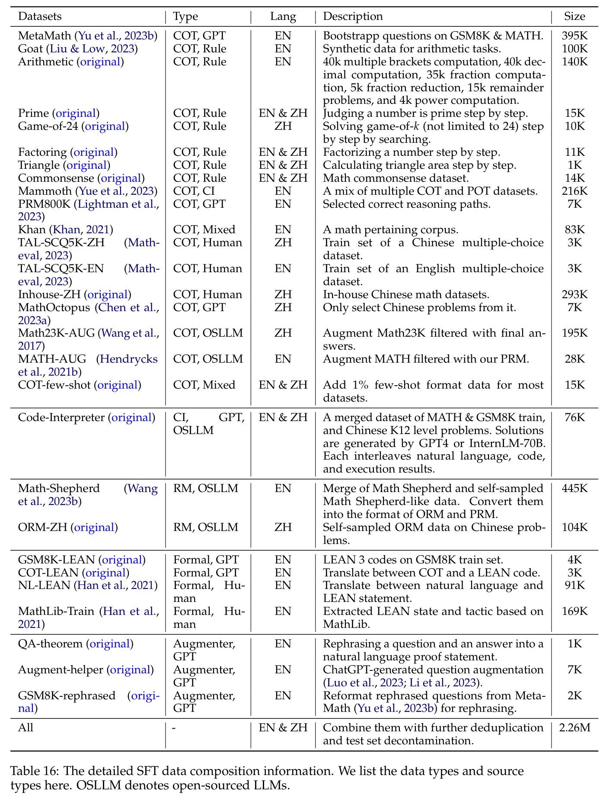
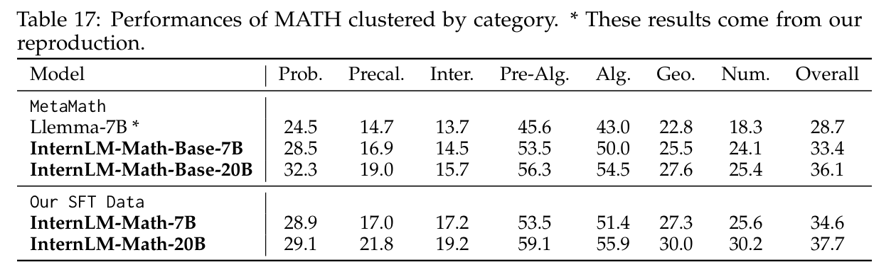
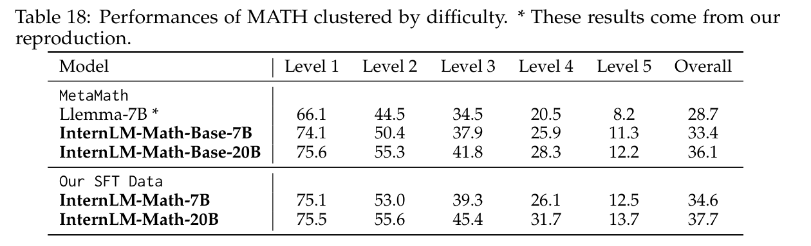
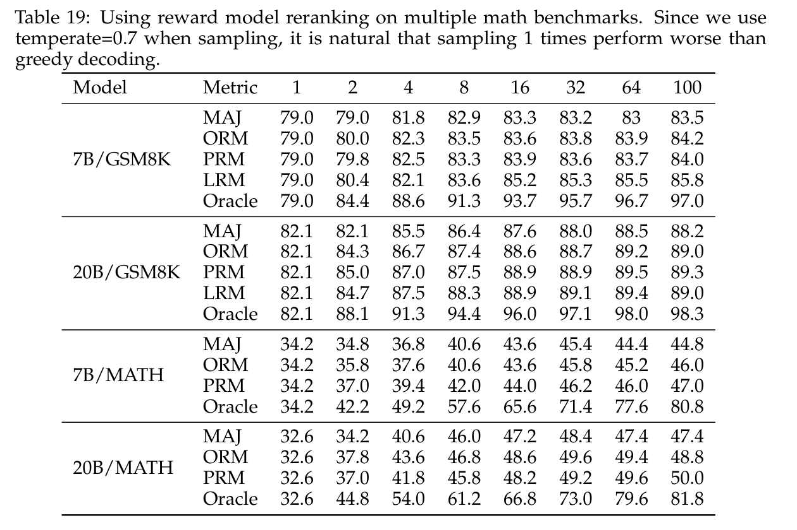
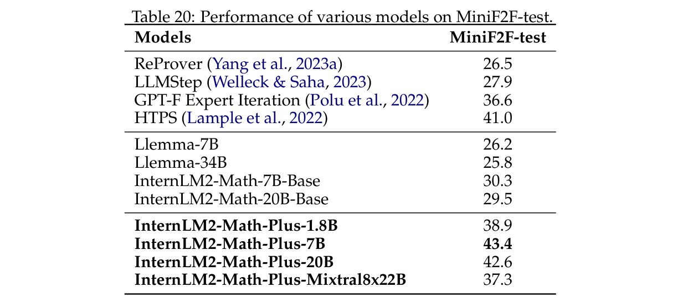
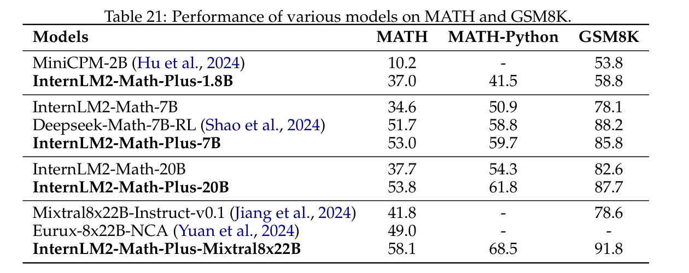
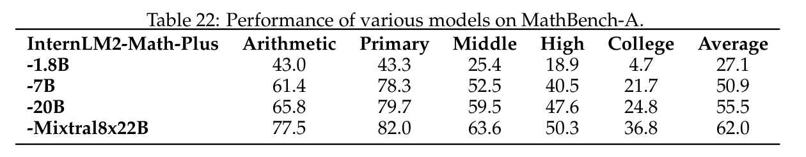